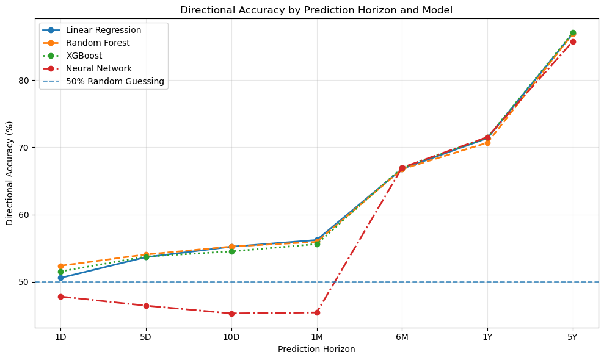
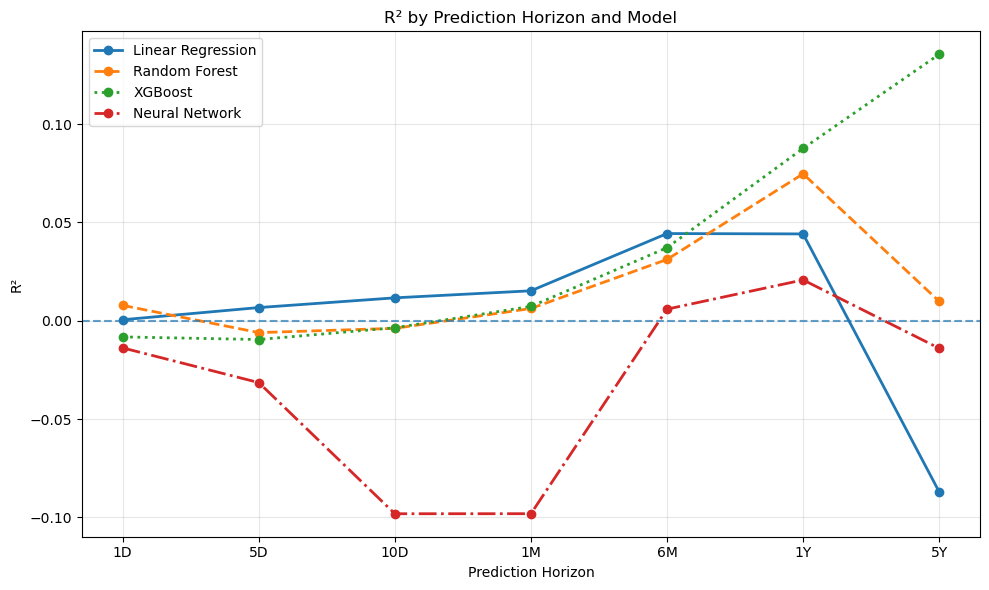
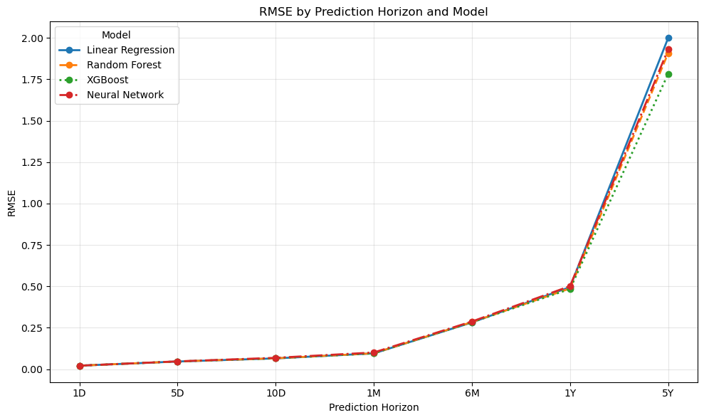
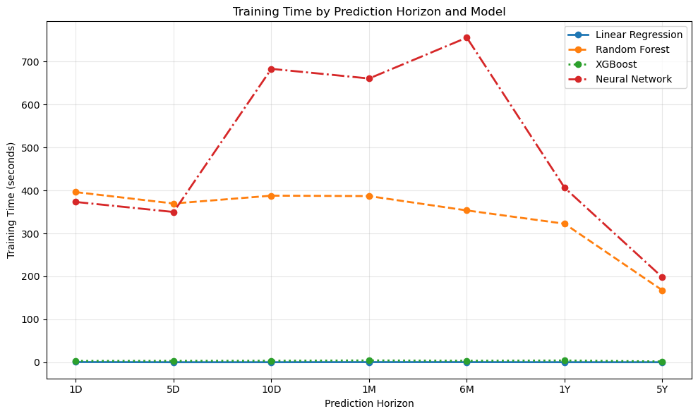
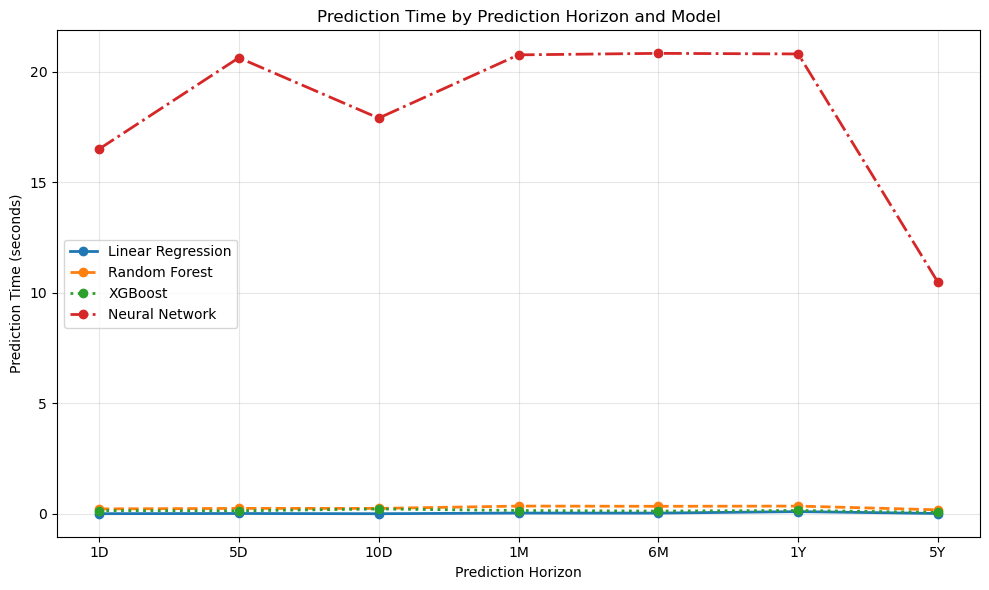

Linear Regression
A traditional statistical method that models the relationship between the input variables and future stock returns.
CIS 300 • WEB DESIGN & DEVELOPMENT
Exploring how statistical and machine learning models can predict stock returns.
THE RESULTS
The project compares statistical and machine learning models across multiple prediction horizons. The goal is not to find the model with the highest score, but to understand how prediction performance changes as the model and time horizon change.
The models in the project include Linear Regression, Random Forest, XGBoost, and a neural network.
MODELS TESTED
A traditional statistical method that models the relationship between the input variables and future stock returns.
A machine learning method that uses decision trees to find patterns and relationships within the financial data.
A gradient boosting method that builds decision trees sequentially and focuses on improving prediction errors.
A more complex machine learning method that uses layers of nodes to learn relationships within the data.
HOW PERFORMANCE WAS MEASURED
The models are tested using different metrics. Mean Absolute Error (MAE) measures the average size of prediction errors, Mean Squared Error (MSE) gives more weight to larger errors. R-squared (R²) measures how much variation in the target variable is explained by the model.
Directional accuracy is also useful because it measures how often the model correctly finds the direction of the return. It also finds prediction performance, and compares model runtime to see if the model is even worth using based on complexity and computational cost.
PROJECT OUTPUTS
The results below show how model performance changes across different prediction horizons. These outputs come directly from the analysis performed for this project.
MODEL PERFORMANCE
Directional accuracy measures how often a model correctly predicts whether the future return is positive or negative.

R² measures the proportion of variation in future returns explained by the model. Higher values show a greater explanatory power.

Root Mean Squared Error measures the size of prediction errors, with larger errors having more weight.

COMPUTATIONAL COST
Training time shows how long each model took to learn from the training data. This helps compare predictive performance with computational cost.

Prediction time measures how long each trained model took to generate predictions for the test data.

WHAT THE RESULTS SHOW
The results let different models be compared across different prediction horizons. A model can perform differently depending on the amount of time between the information used for prediction and the return being predicted.
The results also show how the prediction performance and computational cost have a relationship. More complex models may require more time and resources to train.
AN EXAMPLE
The 5-year horizon had some of the highest directional accuracy values in the project. XGBoost had an R² of 0.1355 and a directional accuracy of 87.05%.
The R² value shows that the model still explains only a limited amount of the variation in future returns. This is why multiple evaluation metrics are important when interpreting model performance. A model can have limited explanatory power while showing higher directional accuracy at a prediction horizon.